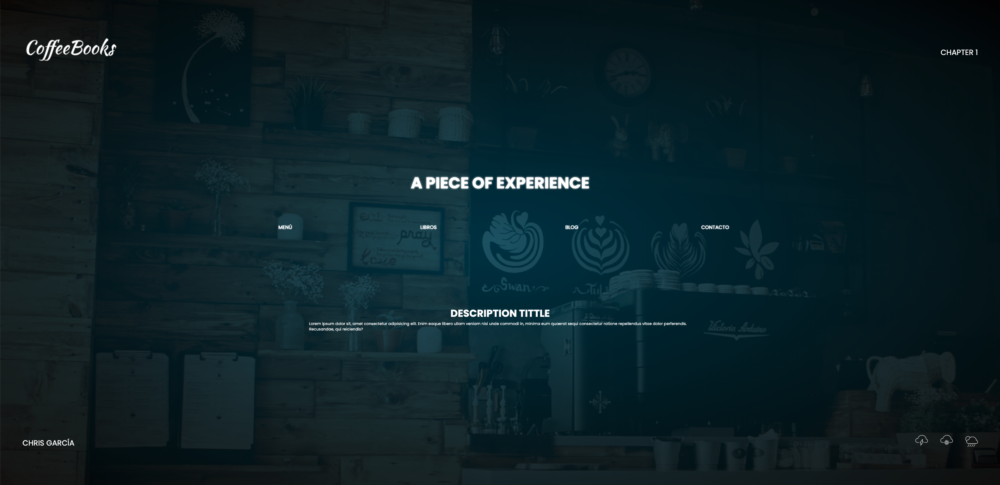

CoffeeBooks
Esto tendría que ser una descripción super cool sobre un trabajo que he realizado para alguna compañía, no necesariamente famosa, pero lo cierto es que no. Lo he realizado por mi cuenta y aún está por acabar. No tiene enlace a ningún sitio porque no tengo tanto tiempo físico para hacerlo. No tengo experiencia laboral pero sí unas ganas tremendas.
